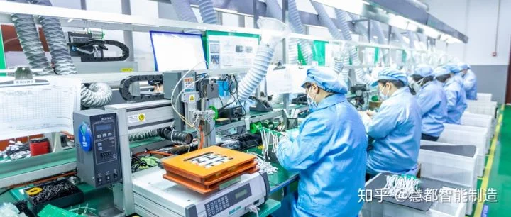
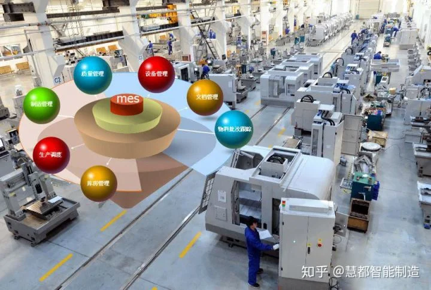
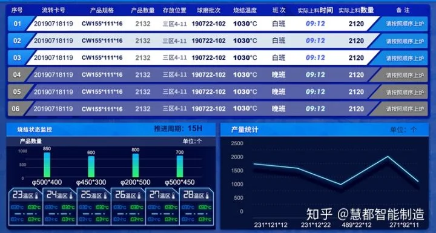

制造型企业面临着紧张的经济和竞争压力：利润越来越少，交货时间越来越紧迫，生产周期缩短，同时产品工艺要求越来越严格。
大部分企业已经在使用ERP系统，他们就会认为：我已经使用了ERP，为什么还需要MES系统？

一、MES能为制造企业解决什么问题
MES系统是一套面向制造企业车间执行层的生产信息化管理系统。MES可以为企业提供包括制造数据管理、计划排程管理、生产调度管理、库存管理、质量管理、生产过程控制、底层数据集成分析、上层数据集成分解等管理模块，为企业打造一个扎实、可靠、全面、可行的制造协同管理平台。
1、MES能为制造企业解决什么问题？
要怎么解决这些鸿沟，答案就是MES！
标准并模块化的MES是车间和高层ERP系统之间的协调信息系统，它提供了通常ERP系统所不能提供的生产车间信息的透明性；提供了连通上层管理系统（如ERP）与底层车间（操作终端与设备）的可靠数据界面等。
MES能为制造企业解决什么问题：
① 出现用户产品投诉的时候，能否根据产品号码追溯这批产品的所有生产过程信息？能否立即查明它的：原料供应商、操作机台、操作人员、经过的工序、生产时间日期和关键的工艺参数？
② 同一条生产线需要混合组装多种型号产品的时候，能否防止工人部件装配错误、产品生产流程错误、产品混装？
③ 过去12小时之内生产线上出现最多的5种产品缺陷是什么？次品数量各是多少？
④ 目前仓库以及前工序、中工序、后工序线上的每种产品数量各是多少？要分别供应给哪些供应商？何时能够及时交货？
⑤ 生产线和加工设备有多少时间在生产，多少时间在停转和空转？影响设备生产潜能的最主要原因是：设备故障？调度失误？材料供应不及时？工人培训不够？还是工艺指标不合理？
⑥ 能否对产品的质量检测数据自动进行统计和分析，精确区分产品质量的随机波动与异常波动，将质量隐患消灭于萌芽之中？
⑦ 能否废除人工报表，自动统计每个过程的生产数量、合格率和缺陷代码？
通过减少负面的流程影响，并且持续地监视您的成果，完整的流程将会最大程度上被改善。这些将转换成为改善的利用率，功率和效率等等，减少生产成本，逐步提高产值效益，最后获得更高的利润！
2、MES系统为企业带来的具体效益
现代企业的目标是追求精益生产，也就是通过减少资源浪费以最小投入实现最大产出的生产理念以及以具有最优质量和最低成本的产品，对市场需求做出最迅速的响应的理念。MES是实施精益生产必须的环境条件。为了达到精益生产，MES必须实时监测、控制、统计、分析各个生产环节全部细节，这也是MES的主要功能。
MES系统为企业带来的具体效益：
① 确切掌握生产状况，提高交货准确度，理顺厂内配送物流，达成产、供、销配合；
② 正确掌握在制品数量，及不良品追踪，降低在制品生产成本；
③ 以条码及RFID等手段追踪产品序号，收集完整资料及过程质量信息，提高产品售后服务水平及满意度；
④ 及时反应品质问题，追踪品质历史记录，提高产品品质；
⑤ 减少人工统计和手工报表，提高现场管理人员生产力；
⑥ 充分掌握工具、设备等使用状况，制造资源做有效运用等。
MES源自制造工厂经理们的底层管理需求，采用全新的理念设计，基于B/S结构可实现轻松部署，对基础数据依赖少，对企业初始管理水平要求低，系统操作简单、易行，支持用户行业化自定义，支持个性化的系统集成方案设计。MES倡导企业遵循精益生产模式，透过系统的数据分析达到精益化持续管理改善的目的，它帮助厂长经理们在键盘上即可轻松、科学地掌管生产动态。

二、ERP需要MES系统功能的五个理由
在大多数制造企业中，生产价值链中的主要成本未能被详细并透明的反映出来。更重要的是，许多通常在ERP系统或者电子表单来维护的生产领域的目标数据全都是在假设或者过去的经验中估计出来的。
在车间的现场只有很有限的IT系统，并且这些系统通常以机械控制与自动化为导向；或者根本是没有IT系统，从而必须有额外的管理人员，花额外的时间，为了不必要的沟通、联络、接洽、电话咨询，产生了很多文件，时间耽搁，查找，增加了额外的成本。上层的管理（ERP系统，电子表单等等）与下层车间环境之间产生了鸿沟，因此产生了低效率与附加成本，从而降低整个公司的绩效。
1、我们的生产线经常出现如下问题：
① 车间的反馈数据（设备运行时间、停滞时间、产能、废品原因、利用与生产效率、有效率等等）有多可靠？
② 底层的车间数据反馈和高层的ERP系统的数据识别间的延滞到底有多少？
③ 哪些是真正的人工成本（工日、工时）需要提供给上层的ERP系统？
④ 尽管我们还没有全负荷运行，为什么我们仍会有这么多交货时间问题？
⑤ 为什么尽管我们满负荷生产并且有最好的营业额，但我们并没有预期中的收益？
……
2、ERP需要MES系统功能的五个理由
① ERP不是车间级产品
尽管ERP系统包含着生产执行的功能，但目前没有一个ERP系统可以实现每生产一件就更新一次的功能。车间生产系统和ERP系统对“实时”的解释不同：ERP是从典型的企业战略管理角度上解释，而MES系统则是生产过程的实时概念。生产系统需要作为一个满足客户，监管机构，供应商以及内部员工的不断变化的需求无缝的整体。这，显然更适合MES的概念。
② ERP上微小的变动会造成大影响
ERP级别上的策略和市场改变造成的影响几乎是生产级别上的变动的10倍。因此，应该专门制造一个生产系统，用于管理生产过程中产量和生产速度的变化。
③ ERP所提供的信息和生产人员所需的信息不同
不同需求的员工不仅信息不同，而且所需信息呈现的方式也不同。传统的ERP项目的界面是为那些分析，决策者设计的。在生产部门中，由于变化更快，应该更快的呈现这种变化。生产过程中，通常不会去分析过时的静态数据，而是会去分析正在发生的信息以及趋势。不同职位的人，需要的信息种类不同，系统呈现的方式也就不同。
④ 供应链需要在战略或商业级以上的层次整合起来
如今，公司间的竞争已经不仅仅是两个公司之间的事了，而是两条供应链之间的事。这也意味着提高效率不仅要从战略或商业层面上进行改善，而是要从整个供应链改善。信息整合只能从车间级开始的各个层次开始整合起来。只有具备及时，准确的信息流。供应链才能高效的运转起来。
⑤ ERP知道“为什么”， MES系统知道“怎么做”
前者用来策略制定，而后者则是操作层面上的东西。知道怎么做的人给知道为什么的人做事，知道为什么的人需要知道怎么做的人实现他们的想法。这是一种很重要的互相依存的关系。
三、MES与ERP如何分工合作？
MES能通过信息传递对从订单下达到产品完成的整个生产过程进行优化管理。当工厂发生实时事件时，MES能对此及时做出反应、报告，并用当前的准确数据对它们进行指导和处理，这种对状态变化的迅速响应使MES软件能够减少企业内部没有附加值的活动，有效地指导工厂的生产运作过程，从而使其既能提高工厂及时交货能力，改善物料的流通性能，又能提高生产回报率。MES系统还通过双向的直接通讯在企业内部和整个产品供应链中提供有关产品行为的关键任务信息。
从ERP和MES的分工进行比较。我们从管理范围、管理对象、管理内容、管理时效四个方面来看：
1、管理范围：ERP是对整个企业或企业集团业务的管理，而MES的管理是针对车间或生产分厂的。即使是功能最完备的MES系统，对整个企业来说，也只是提供了一个比较狭窄的视角，缺乏管理层管理和决策所需要数据的宽度和深度。
2、管理对象：ERP是对企业整个运营资源（人、财、物）的管理，强调物流、资金流的统一，也即所谓的“业务财务一体化”。MES的管理则更集中于生产现场资源，即设备、工艺、物料等。
3、管理内容：ERP管理整个企业的内部价值链和供应链，即销售、采购、生产、库存、质量、财务、人力资源等，强调所有这些业务的整合，强调计划（销售计划、生产计划、采购计划等）的协调和控制；MES主要管理生产的执行，包括生产质量、生产作业调度、生产实绩反馈等。
4、管理时效：ERP对计划和业务管理的时间区段比较宽，以年、季、月、旬或周、日为单位;由于对生产现场管控的需要，MES的管理更加细致，管到日、班、小时。在ERP系统产生的长期计划指导下，MES根据底层控制系统采集的生产实时数据，进行短期生产作业的计划调度、监控、资源配置和生产过程的优化等工作。
四、慧都MES系统介绍
MES系统是一个行业性特别强的系统，选择一个具有丰富的行业经验和先进的管理思想的MES系统十分重要。慧都科技17年来深耕制造行业，具有了非常成熟的行业经验以及成熟的解决方案，慧都可以为企业提供一套模块化、基于B/S或C/S架构开发的MES系统，包括仓储管理、生产计划、工艺管理、生产管理、质量管理、设备管理、预警管理、KPI决策分析等核心功能，从而帮助企业解决可追溯性、生产控制和企业级系统集成问题，以确保同时满足成本、质量、交期等目标。

此外，慧都的MES解决方案基于独立自主开发的平台搭建，企业可以简单的进行二次开发，满足企业个性化的需求，从而降低生产厂商因需求变更带来成本支出，企业可以用最低的技术门槛、最低的成本、风险更小的方式实现智能化的转型升级。